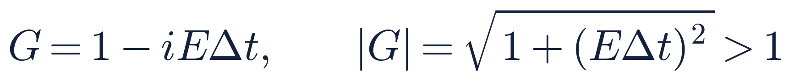
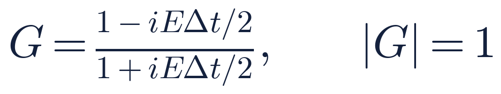
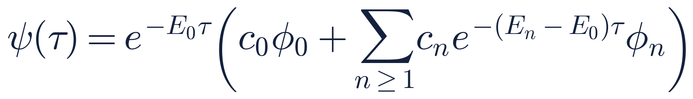

オープンCAEシンポジウム
OpenFOAMを用いた
量子力学解析ソルバの開発
シュレーディンガー方程式／グロス・ピタエフスキー方程式ソルバ
schrodingerFoam の試作
オープンCAEシンポジウム
はじめに
OpenFOAMは「流体ソルバ」ではなく、偏微分方程式を有限体積法で解くフレームワーク
時間・空間の微分を含むシュレーディンガー方程式も、同じように OpenFOAM で解けるはず。
2 / 17
オープンCAEシンポジウム
古典と量子の基礎方程式
シュレーディンガー方程式は「拡散方程式に i が付いた形」
| 対象 | 基礎方程式 | OpenFOAM のソルバ |
|---|
| 質点の古典力学 | m d²x/dt² = −∇V(x) | ニュートンの運動方程式（常微分方程式） |
| 熱伝導・拡散 | ∂T/∂t = α∇²T | laplacianFoam |
| 流体（非圧縮） | ∂u/∂t + (u·∇)u = −∇p/ρ + ν∇²u | icoFoam など |
| 量子力学 | iħ ∂ψ/∂t = −(ħ²/2m)∇²ψ + Vψ | schrodingerFoam（本研究） |
| 量子流体（BEC） | iħ ∂ψ/∂t = −(ħ²/2m)∇²ψ + Vψ + g|ψ|²ψ | schrodingerFoam（g ≠ 0） |
・古典との対応：位置と運動量の期待値 ⟨x⟩、⟨p⟩ はニュートンの運動方程式に従う（エーレンフェストの定理）。調和ポテンシャルでは厳密に一致（例題 2）
・ψ = √ρ eiθ と置くと（マーデルング変換）、GP 方程式は連続の式と、量子圧力項の付いたオイラー方程式になる → 「量子流体」
3 / 17
オープンCAEシンポジウム
本研究の内容
laplacianFoam を改造して、新しいソルバ schrodingerFoam を開発
① 対象の方程式
時間依存シュレーディンガー方程式と、非線形のグロス・ピタエフスキー（GP）方程式
② 複素数の扱い
複素波動関数を、実部・虚部の 2 本の実数場に分ける
③ 時間の解き方
実時間はノルムが保存されるクランク・ニコルソン法、基底状態は完全陰的な虚時間発展
④ チュートリアル
トンネル効果・調和振動子・トラップ開放・ダークソリトンからの量子渦生成
4 / 17
オープンCAEシンポジウム
基礎方程式
GP 方程式で g = 0 とすれば、シュレーディンガー方程式
時間依存シュレーディンガー方程式（|ψ|² = 存在確率密度、∫|ψ|² = 1）

グロス・ピタエフスキー（GP）方程式（BEC、|ψ|² = 粒子数密度、∫|ψ|² = N）

第 3 項 g|ψ|² が非線形項（粒子間相互作用）。1 つのソルバの設定（g）で 2 つの方程式を扱う。
5 / 17
オープンCAEシンポジウム
無次元化
背景密度と化学ポテンシャルで無次元化し、格子幅はヒーリング長で決める
長さ・時間
ℓ = ħ / √(mμ)、t̃ = μt / ħ
ヒーリング長
ξ = √(D / g n₀) ≈ 0.707
以下、右辺を与えるハミルトニアン演算子を H と書く。
6 / 17
オープンCAEシンポジウム
実装 1 複素波動関数の分離
ψ = u + iv と分け、2 本の実数場の方程式にする
OpenFOAM には複素数の場（complexScalarField）はあるが、行列を解く陰的演算（fvm::）には対応していなかった。
H の係数はすべて実数 → 実部・虚部を比べるだけで、OpenFOAM の実スカラー場（Psire、Psiim）でそのまま扱える。
7 / 17
オープンCAEシンポジウム
実装 2 ノルム保存の時間離散化
前進オイラーは必ず発散、クランク・ニコルソンは |G| = 1
前進オイラー法（陽解法）

Δt をどれだけ小さくしても増幅（無条件不安定）
クランク・ニコルソン法（θ = 1/2）

分子と分母が複素共役 → 任意の Δt でノルム保存

8 / 17
オープンCAEシンポジウム
実装 3 虚時間発展による基底状態
t = −iτ と置くと、基底状態だけが残る

Eₙ − E₀ > 0 の成分は減衰する。ただし全体の大きさも変わる → μ を引いてノルムを保つ
拡散方程式と同じ形 → laplacianFoam 由来の fvm:: で完全陰的に解ける
各ステップ後に ∫|ψ|² を規格化し直す
収束すると Hψ = μψ（定常 GP 方程式）
9 / 17
オープンCAEシンポジウム
ソルバの構成
虚時間と実時間を、1 つのソルバのモード切替にまとめた
10 / 17
オープンCAEシンポジウム
チュートリアル計算例
「とりあえず動く」4 つの例題を用意した
| 例題 | 領域 | セル（Δx） | Δt | 終了時刻 | g |
|---|
| 量子トンネル（1D） | [−40, 40] | 400（0.2） | 0.01 | 22 | 0 |
| 調和振動子（1D） | [−12, 12] | 240（0.1） | 0.005 | 12.566 | 0 |
| トラップ開放（2D） | [−20, 20]² | 200²（0.2） | 0.005 | 10 | 0 |
| ダークソリトン（2D） | [−16, 16]² | 128²（0.25） | 0.005 | 150 | 1 |
線形の例題（g = 0）では、ノルムの相対変動は計算期間を通して 10⁻⁷ 以下。
11 / 17
オープンCAEシンポジウム
例題 1 量子トンネル効果（1 次元）
古典的には越えられない障壁を、波束の一部が透過する
幅 a = 0.8、高さ V₀ = 2 の矩形障壁に、ガウス波束（x₀ = −15、σ = 2、k₀ = 1.5）を入射。運動エネルギー E = 1.125 < V₀
透過率（t = 22）：計算 0.380
理論（波数分布で重み付け）：0.383
12 / 17
オープンCAEシンポジウム
例題 2 調和振動子ポテンシャル（1 次元）
コヒーレント状態は、形を保ったまま底を中心に往復する
V(x) = ½ ω² x²（ω = 1）。基底状態のガウス関数を x₀ = 4 だけずらして初期値に。
安定なつり合い点のまわりをテイラー展開すると、なめらかなポテンシャルは放物線型（ω² = V″(xₑ)）で近似できる。
13 / 17
オープンCAEシンポジウム
例題 3 トラップの開放（2 次元）
量子の雲は、縦横比が反転する（不確定性原理）
ωx = 0.03125、ωy = 2 の横長の雲を t = 2 で開放
狭く閉じ込めた y 方向ほど運動量の広がり Δp_y ~ ħ/Δy が大きい → 縦長へ反転
| t | σx（解析） | σy（解析） |
|---|
| 0 | 4.000（4.000） | 0.500（0.500） |
| 6 | 4.031（4.031） | 3.967（4.031） |
| 10 | 4.123（4.123） | 7.786（8.016） |
t = 6 で縦横比 ≈ 1（解析解の反転時刻）。t = 10 の σy は境界の影響で −2.9 %
14 / 17
オープンCAEシンポジウム
例題 4 ダークソリトンからの量子渦生成（2 次元、GP 方程式 g = 1）
帯状のくぼみが崩れて、位相が 2π 巻く量子渦が生まれる
2 本のダークソリトン ψ₀ = tanh((x+x₀)/w) tanh((x−x₀)/w)（w = 1、x₀ = 6）＋ホワイトノイズ（振幅 10⁻²）、周期境界
巻き数 ±1 の量子渦：t = 60 で 12 個、t = 100 で 8 個
15 / 17
オープンCAEシンポジウム
今後の展開
同じプラットフォームで、量子流体と古典流体を扱う
アナロジー研究
通常の流体と、GP 方程式が記述する量子流体（BEC）を、同じ OpenFOAM の上で比べる
量子流体と古典流体の連成
有限温度では常流体成分も関わる。力の受け渡しを実装すれば、OpenFOAM 内で完結できる
KS-DFT への展開
コーン・シャム方程式も「ラプラシアン＋ポテンシャル」の形。自己無撞着の反復が要るため、別ソルバ ksdftFoam（水素・ヘリウム原子）として試作中
16 / 17
オープンCAEシンポジウム
まとめ
laplacianFoam を改造し、schrodingerFoam を開発した
① 複素波動関数を実部・虚部の 2 本の実数場に分け、既存の有限体積オペレータをそのまま流用
② 前進オイラーは |G| > 1 で発散。クランク・ニコルソン法でノルムを保存
③ 虚時間発展は拡散方程式と同じ形 → 完全陰的に基底状態を作成。実時間とモード切替で 1 つのソルバに
④ トンネル効果・調和振動子・トラップ開放・量子渦の 4 例題をチュートリアルとして整備
今後：GP 方程式による量子流体（量子渦の生成・崩壊など）の計算を進める
17 / 17